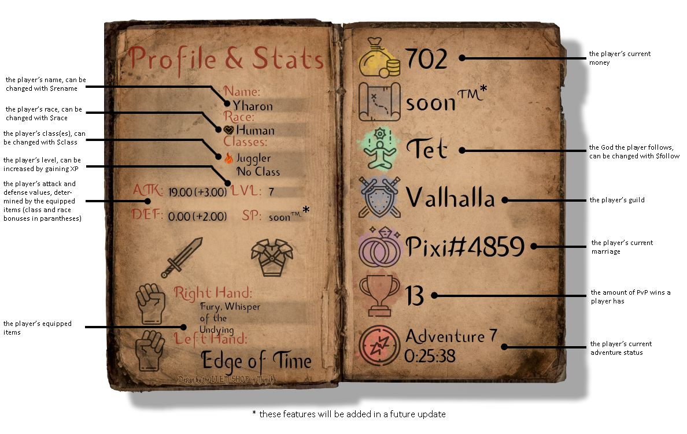
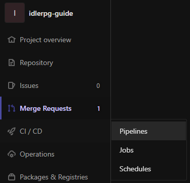
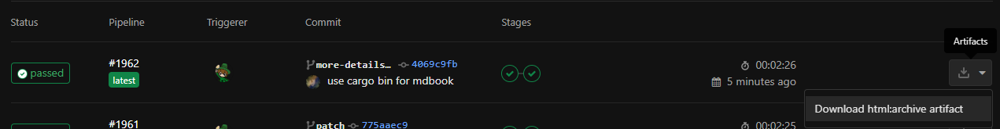
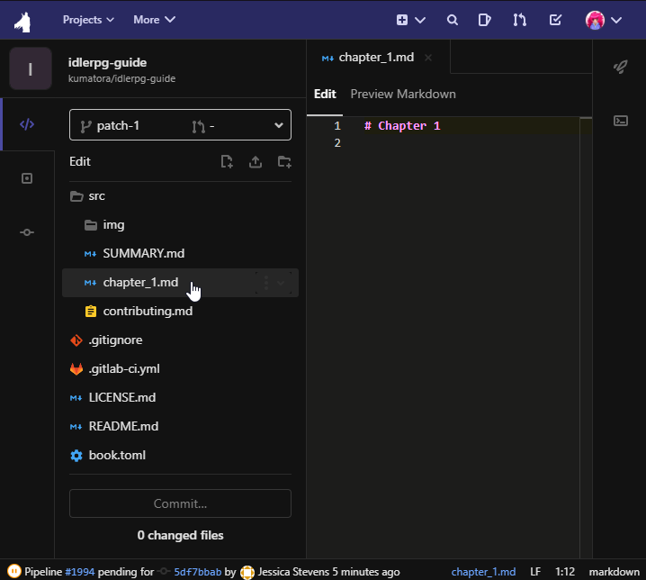

Introduction
Welcome, fellow adventurer, to IdleRPG, a fun and addicting discord bot RPG, with a shop system, characters, dungeons, items, PvP battles, an economy system, and a surplus of features eagerly waiting to be used! This guidebook will provide you with an in-depth manual of the IdleRPG bot.
We will cover the basics, such as creating a character, profiles, and adventures. We will also cover strategies, such as efficient XP grinding or how to make money, along with other topics like player interaction.
For the more experienced veterans, we got you covered too! We have advanced game tactics and tips on how to succeed in the end game.
The bascis
In this chapter, we will be introducing the basic game mechanics to you.
After this chapter, should should have a general explanation as to how IdleRPG works and what you can do.
Keep in mind, that the default prefix is $. You can change your prefix at any time using $settings prefix <something else>, however we will be using $ in this guidebook.
Getting started
Hello! Welcome to the guidebook for the IdleRPG Bot. This bot is mainly focused around an adventure-style text-based game.
So, you've just heard of this bot and don't know how to get started? We've got you covered!
Go here to learn how to invite this bot to your server if you haven't already! To get started, you can use $create [name] to create your character and begin your journey!
After creating your character, you can use $profile, or just $p to view your character’s profile. You'll be shown your character name, and all of the character stats you need to know, such as attack and defense stats, and the amount of money you have. Here is a quick explanation of what each value means:

If this profile is too complicated, takes too long to load, or you simply don't like it, IdleRPG offers $profile2, or $pp to view a shorter version, packed into an embed.
Classes
Another feature to help you with your future endeavours would be choosing a class. The game has 7 different classes to choose from, all with varying buffs that increase with your level.
| Class | Effect |
|---|---|
| Mage | +1 damage per evolution |
| Warrior | +1 defense per evolution |
| Ranger | Gains a pet to help gather items |
| Raider | +0.1x raidstats per evolution |
| Ritualist | 2x chance of getting loot in adventures, bonus favor to $pray and $sacrifice |
| Thief | Can $steal 10% from a random player |
| Paragon | +1 damage and defense per evolution* |
*The Paragon class is only available to donors
To choose a class, type $class, scroll through all the classes using the ◀️▶️ reactions and confirm using the ⏺ reaction.
Make sure you choose correctly. The first time you choose a class, it's free. Changing your class later will cost $5,000.
You can get a secondary class at level 12. It's impossible to choose the same class twice and, like with the first class, the first time you pick second class is free.
To see your current class and evolution level, you can also use $myclass. Use $tree to see all the different classes with their different evolutions.
Evolution is a stage at which your class level is at, you can evolve once every 5 levels by using $evolve.
Race
Races are a feature that allows you to choose one of five races, all of which give unique stat bonuses.
You choose your race at the beginning and can only change later with reset points.
Reset points are points you can use to change your deity or race. Every player starts with 2 reset points on default and you can't get anymore.
On occasion, IdleRPG's developer will host giveaways for reset points. You can join these giveaways in the IdleRPG Community Server.
- Orc: You gain +0 damage and +4 defense
- Dwarf: You gain +1 damage and +3 defense
- Human: You gain +2 damage and +2 defense
- Elf: You gain +3 damage and +1 defense
- Jikill: You gain +4 damage and +0 defense
Favor
Ah, favor. Favor is something you can get when you sacrifice your loot to a God. The more favor you get, the better of your chances of getting more luck from your God. If you get into the top 25 followers, you might get a reward!
$favor shows your God and the amount of favor you have with them.
Favor is something players need to gain with their God in order to get Bonus $luck multiplier if they got to Top 25 $followers. $pray and $sacrifice commands can be used to increase favor.
$luck is randomly generated by the bot and can reach from 0.00 to 2.00, the average is 1.00 to all followers of each God.
This random luck depends on God's luck boundaries (see the Gods chapter) and could be different from other followers of other gods.
During the luck generation (usually on Monday), the bot finds the top 25 followers of each God to give them bonus luck. After all the luck factors has been given, all players' favor will be reset to 0 to allow for fair competition in the following week.
Note: The maximum luck factor is 2.0, even if the additional bonus luck exceeds that number.
To see if you're in the top 25, get your favor amount in $favor first then use $followers 25. After that, download the given file, and see if your favor amount is there. You can verify by comparing the long numbers against your User ID.
Luck
Luck is a major factor in IdleRPG!
By default, it will be set to 1.0, initially or without following a God, being neither good nor bad. However, when you follow a God, this luck can and will change drastically. But what does luck do? Well, it has a numerous amount of things that are affected.
The luck factor affects:
- The chances of survival and successfully completing an adventure
- Item stat (damage, armor, value) after surviving adventures
- Money obtained after surviving adventures
- Item stat upon successful
$pet hunt
Luck factor does NOT affect:
- Gambling chance
- Raids
- Battles or tournaments
- Making children
$stealsuccess chance
Adventures
To embark on an adventure, you use $adventure [1-30].
Keep in mind that the adventures you can go on relate to your level. For example, when you're on level 2 you can only do $adventure 1 or $adventure 2.
The adventure number corresponds to the and the amount of time needed, The higher the difficulty, the higher the chance of getting loot or more powerful gear.
To check how long until your adventure finishes, use $status, and once the adventure finishes you can use $status again to complete it and collect your reward! From there you can go on another adventure.
To see how experienced you are and how much more you need to train to level up, use $xp.
Of course, when starting out, you can't do some of the higher-level adventures, because:
- You are not high enough level to have unlocked the adventure, and
- You are most likely not strong enough to come out of the adventure alive due to the low tier weapons you have.
To see your success rate for each adventure you can use the command $adventures or $missions. This will pull up a list of all the adventures and show your success rate with the current items you have equipped on your character.
You can navigate the list by using the arrow reactions or pressing on the numbers reaction and typing a number from 1 to 30 to select a certain adventure level.
Boosters
Something else to keep in mind is that you can buy and use specific boosters that can boost your adventures in various ways.
To access the shop to buy boosters, simply use the command $store. It explains everything you need to know about boosters.
If you want to buy in bulk then simply add the amount you want to buy at the end of the command. For example, if you want to buy 10 time boosters, then you will type out the command as so: $purchase time 10.
By default, if you want to buy just 1 booster, then you can just use the command without adding a number at the end.
To use the boosters, use the command $activate time/luck/money/all.
An important thing to remember when using boosters is the time to activate them. Their effects will only show when they have been activated, however timing is key:
- Time boosters need to be active before you start an adventure
- Money and luck boosters need to be active before you finish an adventure
This means that you can start an adventure with only an active time booster and activate the other two booster types right before finishing it.
Player interaction
In this chapter, we will be showing you which commands can be used to interact with other players.
After this chapter, you should know what to expect when it comes to playing IdleRPG with other players.
Should I add a note that some players are dicks here?
Trading
This section will introduce you to the $trade command, as well as other ways to trade certain types of items.
Crates
To see what crates you have, $crates gives a breakdown by each type. Crates can be opened ($open [type]), sold, traded or given to other IdleRPG players.
Crate drop chances for range of stats from each crate rarity:
we gotta find a way to add emojis here
- Common:
- 50 %: 1-9
- 30 %: 10-19
- 20 %: 20-30
- Uncommon:
- 50 %: 10-19
- 30 %: 20-29
- 20 %: 30-35
- Rare:
- 50 %: 20-29
- 30 %: 30-34
- 20 %: 35-40
- Magic:
- 50 %: 30-34
- 30 %: 35-40
- 20 %: 41-45
- Legendary:
- equally likely: 41-50
is there a way to make this into a comprehensive table?
also, we need text on how to actually get crates
Items
Items are equippable weapons that you can use to increase your adventure survivability rate, and make you stronger in all battle-related aspects of the game.
You can get items by finishing adventures, buying them off the market or other players, opening crates or buying them off $trader.
There are two main categories of items, two handed and single handed, while single handed weapons can be further categorised into left handed, right handed, or any handed.
All items deal damage except for the shield, as the shield gives you armor.
Types
| Item Type | Hand | Description |
|---|---|---|
| Axe | any | An any handed weapon that has an axe head attached to a handle. |
| Dagger | any | An any handed weapon that is a short knife with a pointed and a double edged blade. |
| Hammer | any | An any handed weapon with a heavy metal head mounted at right angles at the end of a handle. |
| Knife | any | An any handed weapon that is sharp but single edged. |
| Sword | any | An any handed weapon with a long metal blade and a hilt with a hand guard. It is one of the older item types in the game. |
| Shield | left | A left handed item that protects you from damage, it is the only item in the game that gives you armor. It is also one of the older item types in the game that came along with swords. |
| Spear | right | A right handed weapon with a pointed tip, typically of steel, and a long shaft, used for thrusting or throwing. |
| Wand | right | A right handed weapon that is a stick with a rune attached at the end. |
| Bow | both | A two-handed weapon that is a curved piece of material that forms a C-shape with a string on the two tips, arrows are automatically in bows and are infinite. |
| Howlet | both | A long black stick used as a two-handed blunt weapon. |
| Scythe | both | A two handed weapon used for cutting crops such as grass or wheat, with a long curved blade at the end of a long pole attached to which are one or two short handles. |
Note: Both handed weapons (also known as 2-handed weapons) can only be equipped one at a time, right handed means it's a single handed weapon that you can only use on your right hand; similarly for left, and any means it's a single handed weapon that can be equipped on either hand.
You cannot have two right handed weapons equipped at the same time, nor too left handeds. You can, however, have two any-handed weapons at a time. The equip logic in IdleRPG will let you know if there was an error while equipping.
Stat
The stat of an item determines how effective it is, the higher an item's stat is, the more effective it is.
Stats means both armor and damage. If a shield has a 41 stat, it means the shield will give you 41 armor and 0 damage. If an any damage dealing weapon's stat is 41, it means it will do 41 damage and 0 armor.
Some other ways you can obtain stats are by races, which give you a total of 4 stats, as well as classes such as warrior, which gives 1 extra armor stat per evolution.
The highest stat a single handed item can be is 50, which can be obtained by opening a legendary crate. The highest stat a two-handed weapon can be is 100, which, too, can be obtained by opening a legendary crate.
Upgrading
Upgrading is a feature which allows you to increase an item's stat.
The stat of an item can be upgraded up to stat 41 for single handed weapons and 82 for two-handed weapons.
The only way to get an item greater than 41 for single handed items and 82 for two-handed weapons is by opening high rarity crates or buying them from other players.
To upgrade an item's stat, use $upgrade [ItemID]. This will prompt a confirmation message which you can agree to by reacting with ✅.
Upgrading an item's stat costs 250 times the stat you are upgrading, which means, for an example, upgrading an 80 stat item costs $20,000, as 250×80 is 20,000.
Money
section unfinished
Contributing
Prerequisites
-
Version control system Git
- Windows: Download and install Git
- Mac:
$ brew install git - Linux: Use your package manager, for example
$ apt install git,$ dnf install gitor$ pacman -S git. Keep in mind that your distribution might use a different one.
-
A file editor of your choice
- If you do not have a file editor installed, online editors such as StackEdit or GitLab's built-in one will work as well
-
A user account on our GitLab
NOTE: If you don't have a computer, or your computer does not allow installing this software (i.e. school computers) but would still like to help, check Contributing with GitLab alone
Optional
- Rust package manager Cargo and the mdbook crate
- Download and install using these instructions
- Install the mdbook crate using
$ cargo install mdbook
Creating your fork
In terms of Git repositories, a fork is a separate version of a project, usually for another user to make changes and create merge requests. That's exactly what we'll do!
Visit the original repository and find the "Fork" button. Click it, select your account and GitLab will create a fork for you.
The fork will have its own URL, being https://git.travitia.xyz/<your username>/idlerpg-guide. To copy it, find the blue "Clone" button and click the Copy Text button.
Congratulations, you now have your own fork of this book! Now we need to get it onto your computer.
Cloning the repository
To start writing contents, you first need to get your own copy of - what we refer to as "clone" - this book.
To do so, on your computer, navigate to a directory you want to store the book in. Next, run the following command in your terminal:
$ git clone https://git.travitia.xyz/<your username>/idlerpg-guide.git
Make sure to replace <your username> with your actual username. In my case, it would be https://git.travitia.xyz/StarSpriteChippy/idlerpg-guide.git.
This will create a new directory named "idlerpg-guide". In it, you will find the book's files. The actual contents of the book are found in the src directory.
Here, you can add new files, edit existing ones, etc.
Adding new pages
If you wish to add new pages, you can simply create a new file in the src directory. The file should end in .md so that the book knows this is a file to add.
Once you have done this, add the newly added page to SUMMARY.md! This is essential for the book to properly work. The file acts like a table of contents.
Each page should have a title, you can do so by adding # Page Title to the bgeinning of the file. In Markdown, this is a headline.
Of course, not only the page's title will be formatted according to Markdown; the entire page is!
But what is Markdown? Markdown is a convenient way to format text. You might even have used markdown without knowing it!
In markdown, two asterisks around a bit of text **like this** will make the text bold like this!
Markdown is used to create emphasis on certain bits of text, we encourage you to highlight certain parts. For a markdown cheatsheet, visit this page.
Making changes
If you want to make a change to a page, i.e. correct text or write some new blocks, simply open the right file in your file editor and change the text.
There are no further things you have to pay mind to.
Previewing changes
NOTE: This will be easier if you have cargo and the mdbook crate installed. If you don't have rust or the mdbook crate installed, you can preview your changes after committing changes. More on that in the next section.
If you want to check what your changes look like before you save them, mdbook offers options.
Open your terminal in the project directory idlerpg-guidebook and enter the following:
$ mdbook build
$ mdbook serve
This will run a webserver for the files. You can open http://localhost:3000 in your webbrowser to view the generated book while it is serving.
Saving (committing) and uploading (pushing) your work
Saving your work using Ctrl+S is not enough if you want to publish it; you'll want to commit it, so that the version control system Git knows this is a new version.
To do this, open your terminal in the idlerpg-guidebook directory and use the following commands:
$ git add ./src/page.md
$ git commit -m "Commit message here!"
$ git push
$ git addmarks the file(s) as ready to commit. This is useful in projects, where you may have changes in multiple files, but only want to commit a few.$ git commmitcommits the files in git. The-m "Commit message here!"is known as the commit message. In it, you should describe briefly what you did.$ git pushuploads, or pushes the commited files to a remote repository, in this case, your repository on our GitLab. From there, you can create a merge request to have your changes implemented into our project.
Commited files are different to saved files in that any commit exists simultaneously. If you save a file, make changes and save again, the old save is gone, but different commmits can be accessed at all times.
Make sure to replace ./src/page.md with the file path to the newly added and/or changed files. SUMMARY.md should always be included if you created a new page.
Also replace Commit message here! with a short note on what you did, i.e. Added new page contributing.md. Commit messages have a maximum of 50 characters, so keep it short and spicy!
After pushing, a CI (continuous integration) on GitLab will build the html files and bundle them in a .zip archive. That way, you can download the files and view them in your web browser.
You can find the zip files in your own repo, in the CI/CD tab, subsection Pipelines. Find the latest pipeline, and in the right side, download the html artifact. Simply unpack the downloaded .zip archive and open index.html in your preferred web browser, et voilà, you can now see what your changes look like in action.
 
Of course, previewing changes this way is a bit tedious, so we recommend getting rust and the mdbook crate and using the method mentioned above.
Creating a merge request
Great! Your files are now uploaded, we're ready to make the changes official.
Head to your repository on our GitLab, the URL is https://git.travitia.xyz/<your username>/idlerpg-guide.
At the top of the page, you should already see a hint saying that you pushed changes with a "create merge request" button next to it. Click it!
Feel free to explore this page to your liking, but the important part is giving your merge request a title and a description.
It is completely fine to use the commit message as the merge request's title, as long as we know what the changes are.
In the description, you should add your name (so we can add you to the book authors), among other things you deem important.
Finally, hit the "open merge request" button! We'll take over from here. But don't forget to check back if we have reviews for your changes, you might be asked to change parts with a new commit.
Contributing with GitLab alone
GitLab offers other ways of contributing if you cannot install Git on your system. The Web Editor and the powerful Web IDE provide a way of contributing to those, who can only use their browser.
Once you have created your user account on our GitLab and read the main Contributing page, you're ready to go!
Forking the project
As regular users don't have file editing permissions in the main repository, you should create a fork - your own copy of the repository - to make changes. Those changes/additions can later be added into the main repository via Merge Requests.
To fork the repository, go to the main one and find the button labelled "Fork" toward the top right. Once you click it, you'll be prompted to select a "namespace". Simply select your user account, and GitLab will create a fork of the repository for you. This could take a minute or two.
From here, you have two options:
- Using the Web Editor
- This is usually not as ressource intensive but makes editing files a bit slower
- Editing more than one file at once is also not possible, requiring multiple commits
- Using the Web IDE
- IDE stands for integrated development environment
- The IDE requires more ressources, but is also a more powerful tool
- With the IDE, you can preview formatted Markdown right as you write it
For a sense of completion, I will cover both methods here.
Note: The following steps are all performed in the main repository. Find and edit the files there, GitLab will automatically figure out the rest. This will make creating merge requests much easier.
Using the Web Editor
To edit files using GitLab's Web Editor is as simple as finding the file and pressing the "Edit" button. You'll be brought into a simple window where you can make changes to your liking.
Once you've done all the changes you wanted, you should find the "Commit Message" field at the bottom. Write a short message of what you did and press the "Commit Changes" button.
After commiting the changes, you'll be brought to a New Merge Request page, what do to from here is discussed further below.
Using the Web IDE
The process of using the Web IDE to edit files is nearly identical. Find the file you'd like to edit and click the "Web IDE" button next to the "Edit" button. You'll be brought to the IDE page.

On the left is the file tree. From here, you can select the files you want to edit by simply clicking them. On the right is the text editor. Here, you can write your text (keeping Markdown in mind). If at any point you'd like to see what your text will look like when it's formatted, use the "Preview Markdown" button at the top.
If you start changing files, you'll notice that the X next to the file name turns into an orange square. This simply means that the IDE knows this file was changed from what it was before.
Once all changes have been made, you should click "Commit..." at the bottom of the file tree. On the right, you're shown all changes, so you can make sure everything is right. If everything is the way it should, write a short commit message, select branch "patch-1" (this could say another number for you), tick "Start a new merge request", and finally click commit.
Opening the merge request
Once you're on the Merge Request screen, you'll see a title and a description field. Make sure to fill in the title field with a short message of what you changed. The description could include your name (so we can add you to the book authors) among other details.
If that's filled in, hit "Submit Merge Request". From this point on, it's our responsibility to quality check and merge the request. This will add the code to the main repository and update the actual guidebook online.